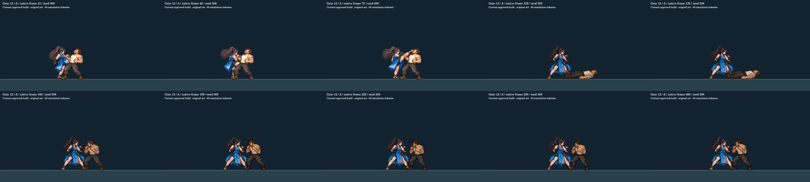
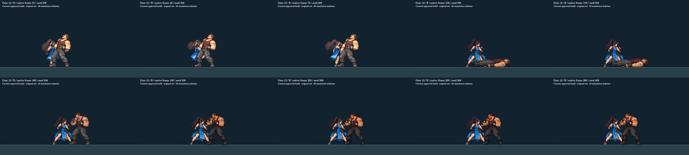
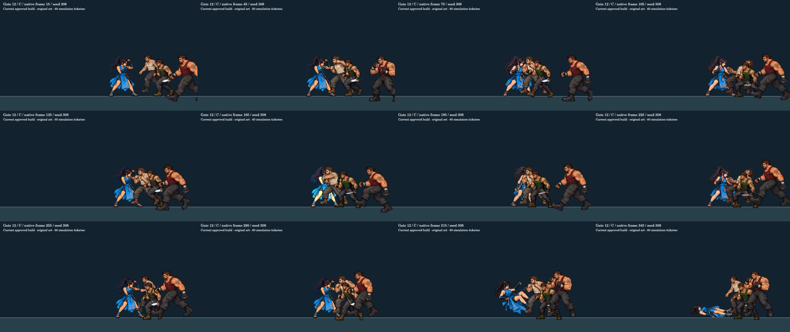
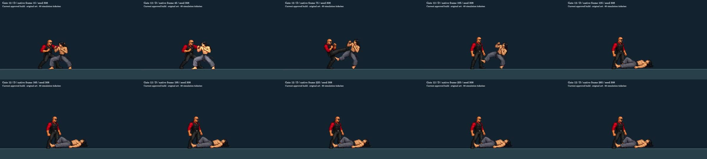
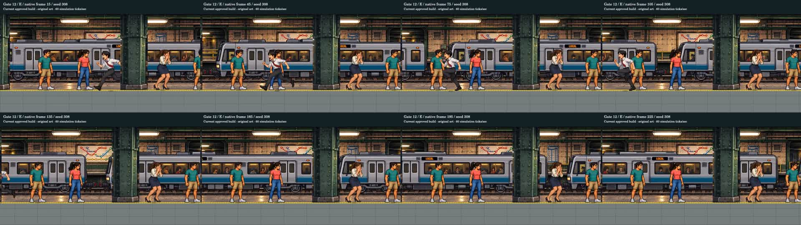

Needs review. Native Saito wake-up works when its AI dispatcher is enabled. Crowd spacing and artistic acceptance still need review. Approved gameplay is unchanged.
Detailed report · Specialist probe results
Seed 308 · original renderer · 60 Hz simulation. Slowed videos replay the same frames; separate runtime tests verify actual simulation speed equivalence.


Native wake-up enabled — the main isolated clip intentionally disables AI.

